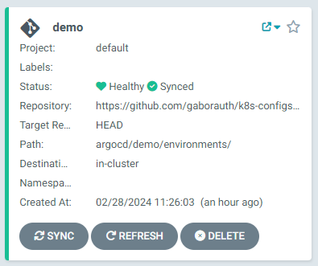
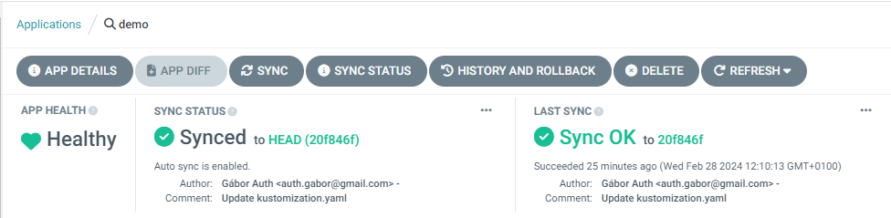
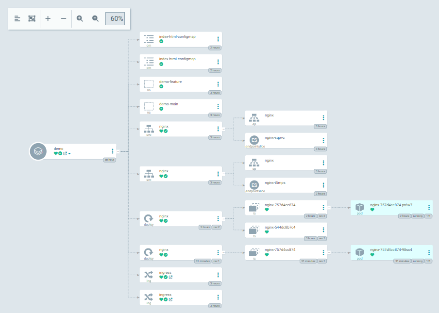
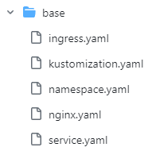
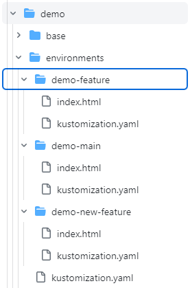
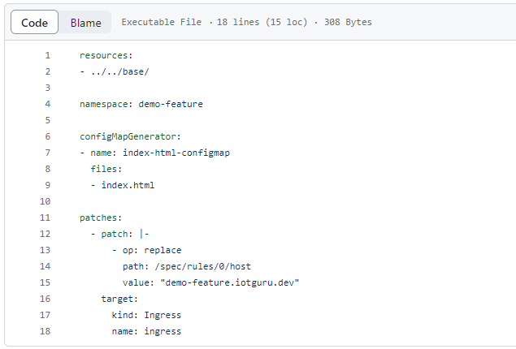

1. Kubernetes
https://kubernetes.io/
Google hobby-project
The name means “helmsman” or "ship pilot" in Greek
Open-source since 2014
The configuration is declarative
1.1. What is it?
Service discovery & orchestration
Automated rollout and rollback
Configuration management
Health checks & rules
Load balancing
Self-healing
1.1. What is it?
1.2. CLI and API
Full-featured API via kubectl
Create, delete, update, scale, etc.
Pods, services, deployments, etc.
Ingress, network policies, etc.
ConfigMaps, secrets, etc.
...and more
1.3. CLI and API
The Kubernetes cluster persists the desired state
It will try to reach the desired state
It will heal itself if something goes wrong
BUT you can hurt it
1.3. Little workshop
kubectl get pods
kubectl create deployment --image nginx nginx
kubectl get pods
kubectl delete deployment nginx
Ups... wrong command...
1.3. Little workshop
Store our nginx in a yaml file
kubectl apply -f nginx.yaml
kubectl get pods
kubectl delete deployment nginx
Ups... wrong command, but never mind!
kubectl apply -f nginx.yaml
kubectl get pods
1.3. Little workshop
Where can we store these yaml files?
How can we manage the yaml files?
How can we manage the configuration?
This point where the GitOps comes in!
4. ArgoCD
"Argo CD is a declarative, GitOps continuous delivery tool for Kubernetes."
4.1. What is it?
Create clusters with a known state.
Recover or recreate applications.
Apply or revert configuration changes.
Templated configuration with different environments.
4.2. What is it?
ArgoCD is built on applications
Applications are defined in a Git repository
ArgoCD compares the actual state with the desired state
ArgoCD synchronizes the actual state with the desired state
4.2. Workshop

4.2. Workshop

4.2. Workshop

5. Feature branch deploy
Give a developer one test environment, and you make happy him for years.
Teach a developer to create test environments, and you make a hell for yourself forever.
What is the solution?
Automate it.
5.1. Feature branch deploy
You have two main option to achieve this:
1. Set up the pull request generator
2. Use the kustomize
5.2. Pull request generator
The pull request generator is a plugin for the ArgoCD
It checks the pull request
It creates a new application in the ArgoCD.
It deletes the application in the ArgoCD.
5.2. Pull request generator
https://argo-cd.readthedocs.io/en/stable/operator-manual/applicationset/Generators-Pull-Request/
The upside is: full automation based on pull requests
The downside is: full automation based on pull requests
The downsides are: you let the Git flow to configure ArgoCD
The downsides are: hard to configure
The downsides are: supports only small or individual projects
5.2. Kustomize
It is a configuration transformation tool
The kubectl supports since Kubernetes 1.14 (since 2019)
You can customize untemplated yaml files
It also can generate resources
5.2. Kustomize
Two main parts are:
base
overlays
5.2. Kustomize

5.2. Kustomize

5.2. Kustomize

5.3. Demo